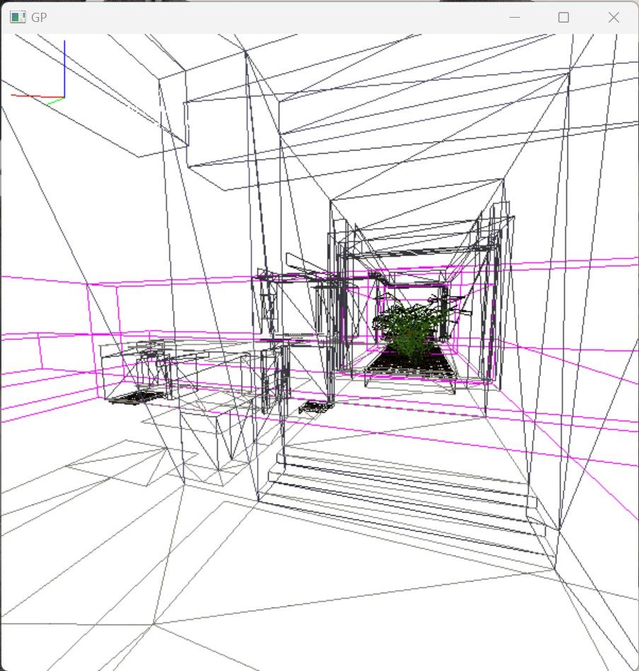
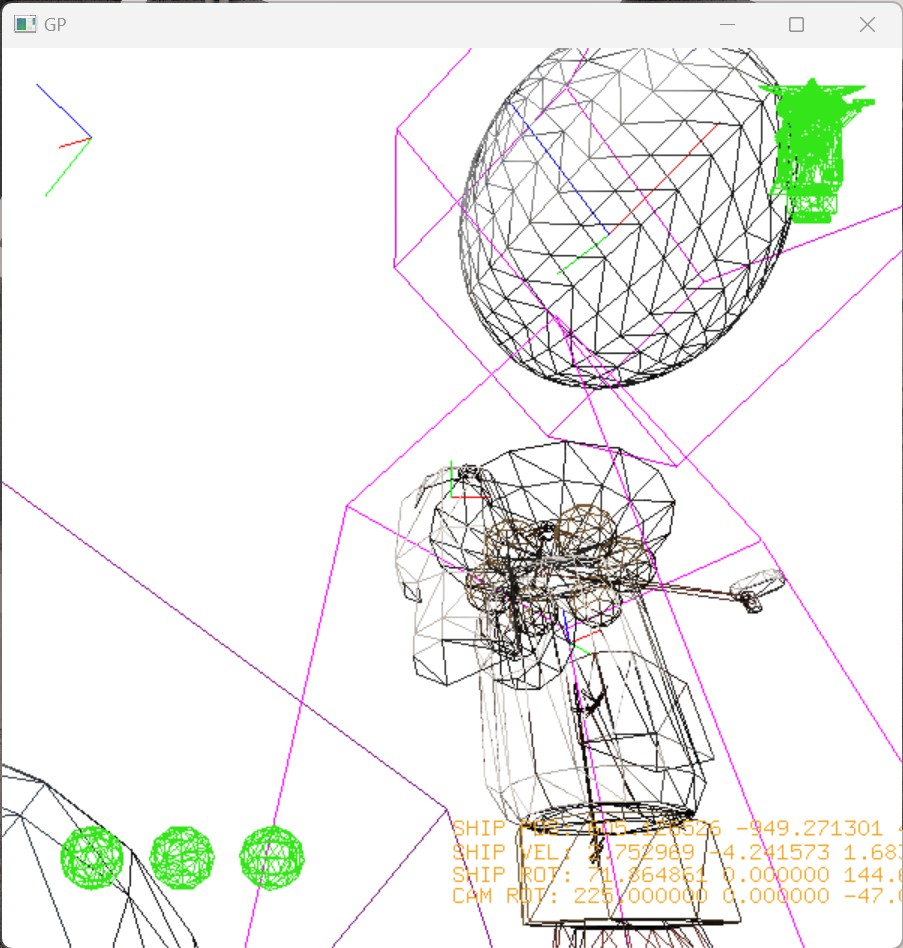

for my Introduction to Graphics Programming module in my first year at University, we were required to make some sort of application which demonstrated the skills and knowledge we developed during the module.
i had a significant advantage on this assignment, since i already have considerable experience with 3D rendering algorithms, shaders, and also just the spatial visualisation you gain from consistently using 3D design software, however i still learned a huge amount during the module.
we were required to use OpenGL 1 to build this application, which imposed some limitations but also introduces the fixed function pipeline in an understandable way.
i settled on creating a simple little space game, where the player could pan the camera, turn the spaceship, and fly around a very simple solar system.
i implemented various key features which the assignment called for: user input, a scene heirarchy, using different features of OpenGL, drawing text, and so on.
however i also gave myself a few particular challenges here. the first was to support switching dynamically between two different scenes, which required building a resource management system and separating the input/rendering side from the actual gameplay and scene control side.
the second challenge was implementing post-processing. i wanted to try and apply the sepia-toned vintage-space look i've used in Blender projects previously, but this proved harder than expected. OpenGL does not support shaders, so the only way to perform post-processing was to copy pixels from the GPU into CPU memory, perform an algorithm in C++ to apply colour correction, then copy pixels back. however, i found that this did not work with non-integrated GPUs, which lead me to a better solution, where the processed pixels are transferred to a texture, which is placed onto a plane in front of the camera and then rendered to give the final image. this, as expected, is unfortunately very slow. but it technically works!
above is the other scene i created, an empty museum-style space (borrowed from another project of mine) also set somewhere astronomical. featuring masked transparency on the leaves.
i also developed a debug view, which was useful during development and is also a cool way of using another OpenGL feature
  sorry if the bright images blinded you